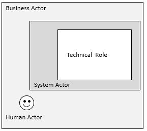
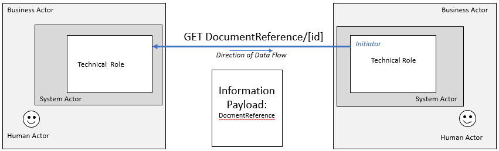

PACIO Advance Directive Interoperability Implementation Guide
0.0.1 - STU1
PACIO Advance Directive Interoperability Implementation Guide
0.0.1 - STU1
PACIO Advance Directive Interoperability Implementation Guide - Local Development build (v0.0.1). See the Directory of published versions
Use Cases that describe the basic information exchange transactions that support information to be shared between systems.
In health information exchange, actors of different types are at play. The following nomenclature will be utilized in this Implementation Guide.
Business Actors – These are the organizations responsible for the technical systems and human users within their boundaries. Advance Directive Registries, Health systems, and patient applications are examples.
Human Actors – These are the individuals that interact with the systems in use. Patients/individuals, physicians and other clinicians, and administrative users are examples.
System Actors – These are the deployed systems with human actor users. ADI Registry Repository and Electronic Health Records Systems are examples.
Technical Actors - Technical roles are the activities of system actors that conduct transaction exchanges. In the above diagram, both “push” and “pull” transaction types are shown. Note that a Transaction line with no arrowhead indicates that the interaction supports both push and pull transactions. Information flow can be initiated by either actor, depending which option is used.
In this ADI use case, advance directive content created and updated will be represented using FHIR resources. The advance directives content is created and may be updated periodically by human actors. For advance directives information, there may be multiple human actors involved; however, there is only one author which is the patient. Other human actors may include the healthcare agent and alternate agents, witness, notary, provider, and data enterer.
System actors are responsible for ensuring the advance directive information is correctly represented using FHIR resources. The technical actor is responsible for carrying out activities to conduct transition exchanges.
Use cases in this IG will provide requirements for systems to use FHIR RESTful operations to both share (PUSH) and query & access (PULL) an individual's advance directive content. In addition, it will cover technical requirements to update advance directive content. Finally, the use cases will provide guidance on verification. In this use case, verification addresses situations when you have advance directive information and you use FHIR RESTful operations to determine if what you have is current. The details for these use cases are provided below.


3.1 Patient query

3.2 DocumentReference query
3.3 Binary read or Read Composition with $Document or Read Composition with _include:*



Query with a documentReference with a document ID and version resource is returned allows you to determine if what you have is current or not.
(Validation is on Client side not Server side)
IG © 2021+ HL7 Patient Empowerment Working Group. Package hl7.fhir.us.pacio-adi#0.0.1 based on FHIR 4.0.1. Generated 2021-03-12
Links: Table of Contents |
QA Report
| Version History |
Search |
 |
Propose a change
|
Propose a change